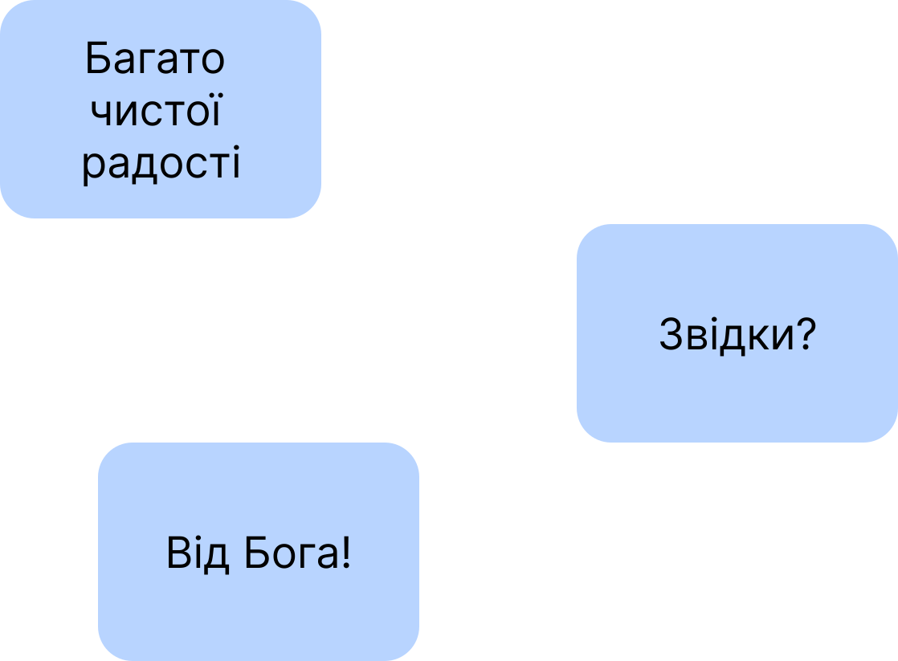

Слава Ісусу Христу!
☀️
Оскільки у праці, опублікованій за посиланням:
https://oleksandr-zhabenko.github.io/uk/commentaries/02082025.html
а ще раніше в інших, опублікованих за посиланнями:
https://churchandsociety.org.ua/pdf/projects/zbirnyk.pdf
https://oleksandr-zhabenko.github.io/uk/commentaries/17082024.html
https://oleksandr-zhabenko.github.io/uk/commentaries/12112025.html
https://oleksandr-zhabenko.github.io/uk/commentaries/27112024.html
написано, що вживання прийменників має важливе значення для правильного розуміння важливих і актуальних питань, зокрема питання влади, то пишу коментарі щодо вживання саме цих прийменників. Як порада щодо читання написаного — можна читати вірш у перекладі чи/та оригіналі (хто має таку змогу), а тоді відповідний коментар щодо прийменників тут. Далі потрібно зрозуміти, якої частини вірша стосується коментар, а також обдумати, що суттєве для розуміння він стверджує — чи рідше — заперечує. Таке вдумливе читання допомагає поглибити розуміння і береже від згаданих помилок.
Важливими творами, які проливають більше світла на цю тему також є наступні:
https://oleksandr-zhabenko.github.io/uk/commentaries/28052026.html
https://oleksandr-zhabenko.github.io/uk/commentaries/16082026.html
Підготував покращений варіант мого дослідження, презентація якого доступна за посиланням:
https://www.facebook.com/Oleksandr.S.Zhabenko/posts/2447150899034358
https://oleksandr-zhabenko.github.io/uk/commentaries/vystup-2025-hypo-genitive-Romans-XIII_1.pdf
Матеріал дослідження наразі готується до публікації. Маю надію, якщо дасть Бог, пізніше представити повніші результати після виходу публікації.
Сам список посилань щодо прийменників буду оновлювати за посиланнями:
https://oleksandr-zhabenko.github.io/uk/commentaries/02082025.html
https://oleksandr-zhabenko.github.io/uk/commentaries/Pryjmennyky.html
крайній — раз або двічі на місяць, щоб зберігати актуальною версію тексту і надалі.
Згадки Стронга (прим. за Стронгом) у перекладі оригінального тексту означають, що слово узято зі словника Стронга, а конкретне значення обране після перекладу та коментаря Google Gemini.
Літургія:
Филип’ян I, 12 — 'εἰς προκοπὴν τοῦ εὐαγγελίου' - 'eis prokopen tou euangeliou' - для успішного розвитку благовістя; для прогресу Євангелія
. Тут також прийменник 'eis' вказує на мету. Йдеться про поширення, прийняття Євангелія для спасіння і освячення людей.
Филип’ян I, 13 — 'ἐν Χριστῷ' - 'en CHristo' - у Христі
. 'ἐν ὅλῳ τῷ πραιτωρίῳ' - 'en holo to praitorio' - у всій преторії
(тобто палаці в Єрусалимі, захопленому римлянами, або в частинах преторіанців, римських охоронців, у Римі).
Филип’ян I, 14 — 'ἐν κυρίῳ' - 'en kyrio' - у Господі
. Йдеться про братів у Господі
. 'περισσοτερως τολμαν αφοβως' - 'perissoteros tolman aphobos' - надмірно (надзвичайно, перевищено) сміливо (відважно і) безстрашно
. Ці слова свідчать про кілька речей:
1) Павло не очікував такого натхнення до проповіді у вірних через своє ув'язнення за Христа;
2) Павло міг думати про більш поміркований спосіб проповіді для вірних, але вони навпаки виявляли запал і сміливість.
Можна так сказати з усього опису (сьогоднішнього і подальшого), що одним словом (двома): проповідь була палкою, пристрасною
.
Приклад сміливості та відважності самого Павла як апостола надихнув інших до подібних зусиль, а особливо ситуація з ув'язненням Павла. Про що він пише. В історії Церкви таких випадків було багато, зокрема дуже часто такі згадки є при описі страждань святих мучеників та мучениць за Христа.
Також тут важливий урок для всіх — потрібно проповідувати з вірою, також сміливо, але і мудрість, про яку говорить неявно Павло, — потрібно виявляти розум у всьому.
Филип’ян I, 16 — 'οἱ μὲν ἐξ ἀγάπης' - 'hoi men ex agapes' - ті ж справді з любові
. Прийменник 'ek' у своїй формі перед наступним голосним тут вказує на справжню причину їх дій — любов, заповідану Христом. 'εἰς ἀπολογίαν τοῦ εὐαγγελίου' - 'eis apologian tou euangeliou' - для захисту Євангелія
. Прийменник 'eis' вказує на мету.
Филип'ян I, 17 — 'οἱ δὲ ἐξ ἐριθείας' - 'hoi de ex eritheias' - ті ж з амбіцій, суперництва
. Прийменник 'ek' у своїй формі перед наступним голосним тут вказує на справжню причину їх дій. 'θλιψιν εγειρειν τοις δεσμοις μου' - 'thlipsin egeirein tois desmois mou' - буквально гоніння підняти кайданів моїх
. Думаю, Павло каже тут, що нещирі проповідники намагаються проповідувати з власних амбіцій, при цьому не зважають на те, що своєю такою нещирою проповіддю можуть збільшити (викликати додатково) гоніння і посилити страждання самого Павла за Христа.
Дивіться також інше місце, де Павло глибше розкриває задум Божий щодо ревності та заздрості:
https://oleksandr-zhabenko.github.io/uk/commentaries/03072025.html
Филип’ян I, 18 — 'ἐν τούτῳ' - 'en touto' - у тому; тим
. Можливі обидва варіанти перекладу.
Филипʼян I, 19 — 'εἰς σωτηρίαν' - 'eis soterian' - на спасіння; для спасіння
. Прийменник 'eis' вказує тут на мету.
Филип'ян I, 20 — 'ἐν οὐδενὶ αἰσχυνθήσομαι, ἀλλ’ ἐν πάσῃ παρρησίᾳ' - 'en oudeni aiskhynthesomai all en pase parresia' - ні в чому, але в усій сміливості; ні в чому, але у повній впевненості
. Можливі різні варіанти перекладу через багатозначність слова parresia
. 'ἐν τῷ σώματί μου' - 'en to somati mou' - у тілі моєму
. Тут йдеться про служіння людини у тілі — і апостол виражає віру, що його відданість Христу і наполеглива праця приведуть до прослави Христа в усьому його житті.
Апостол Павло каже, що своїм прикладом надихнув інших сміливо проповідувати Христа, і це служитиме самому Павлові на спасіння через молитви вірних за нього та дією Самого Ісуса Христа та Святого Духа.
Тут також важлива думка, що якщо людина діє у Святому Дусі, правильно, то якщо хтось інший буде намагатися це використати у своїх інтересах з різною метою, то це не знівелює правильності та святості дій тієї першої людини, не зведе їх нанівець, але правильність і святість будуть збережені Самим же Святим Духом.
Тут усе залежить від Святого Духа — чи то дійсно Він провадить людину до тих дій, чи ні. Якщо Він провадить, то такі дії святі та правильні, про них сказано щойно вище. Але якщо дії виглядають добрими, але не Святий Дух веде до них Сам, тоді такі видимо добрі дії скоріше усього насправді добрими не являються, і тій першій людині потрібно з великою обережністю та розсудливістю, мудрістю діяти з огляду на можливе їх використання кимось ще з іншою метою — усе, щоб не стати просто жертвою власної необачності, недалекоглядності та наївності. А головне — потрібно шукати, що ж є справді Божою волею.
У випадку з проповіддю Павла він свідчить, що то діє Святий Дух через Нього, і тому він радіє.
Більше про читання з Апостола дивіться за посиланнями:
https://oleksandr-zhabenko.github.io/uk/commentaries/06102026.html
https://oleksandr-zhabenko.github.io/uk/commentaries/14102025.html
https://oleksandr-zhabenko.github.io/uk/commentaries/14102025.html
https://oleksandr-zhabenko.github.io/uk/commentaries/03072025.html
https://oleksandr-zhabenko.github.io/uk/commentaries/30102024.html
https://oleksandr-zhabenko.github.io/uk/commentaries/11102023.html
Луки V, 34 — 'ἐν ᾧ' - 'en ho' - коли; поки
. Сталий вислів.
Луки V, 35 — 'ἀπ’ αὐτῶν' - 'ap auton' - від них
. Тобто повністю заберуть. 'ἐν ἐκείναις ταῖς ἡμέραις' - 'en ekeinais tais hemerais' - у ті дні
. Сталий вислів зі значенням тоді
.
Луки V, 36 — 'ἀπο ἱματίου' - 'apo himatiou' - від одягу
. Вказує на повний розрив. 'ἀπὸ τοῦ καινοῦ' - 'apo tou kainou' - від нового
. Так само.
Луки V, 37, 38 — 'εἰς ἀσκοὺς' - 'eis askous' - у винні бурдюки
. Куди.
Щодо латки і щодо бурдюків — Господь має на увазі, що між старим ставленням до благочестя (обрядовим) та Євангелієм є помітні відмінності, так що неможливо вмістити
обидва добре. І оскільки учні покликані до оновлення у Христі, у Новому Завіті, то Христос ніяк не вимагає від них того, що їм може навіть зашкодити у цьому головному. Гарний приклад також для поступового навчання новому життю разом з Христом — потрібно готуватися на оновлення, а не переформатування
старого. Адже справжня чеснота не є переформатованим
старим способом життя, який чеснотним не був.
Про паралельне місце у Марка дивіться за посиланнями:
https://oleksandr-zhabenko.github.io/uk/commentaries/21082026.html
https://oleksandr-zhabenko.github.io/uk/commentaries/30082025.html
https://oleksandr-zhabenko.github.io/uk/commentaries/13092024.html
Більше про читання з Євангелія дивіться за посиланням:
https://oleksandr-zhabenko.github.io/uk/commentaries/15102025.html
https://oleksandr-zhabenko.github.io/uk/commentaries/25092024.html
https://oleksandr-zhabenko.github.io/uk/commentaries/13092024.html
https://oleksandr-zhabenko.github.io/uk/commentaries/25082023.html
Мучеників Сергія і Вакха:
Про читання з Апостола дивіться за посиланнями:
https://oleksandr-zhabenko.github.io/uk/commentaries/09032025.html
https://oleksandr-zhabenko.github.io/uk/commentaries/22122024.html
https://oleksandr-zhabenko.github.io/uk/commentaries/30062024.html
https://oleksandr-zhabenko.github.io/uk/commentaries/24032023.html
https://oleksandr-zhabenko.github.io/uk/commentaries/31032023.html
https://oleksandr-zhabenko.github.io/uk/commentaries/01082024.html
https://oleksandr-zhabenko.github.io/uk/commentaries/11062023.html
https://oleksandr-zhabenko.github.io/uk/commentaries/05032023.html
https://oleksandr-zhabenko.github.io/uk/Syla-lyudyny.html
https://oleksandr-zhabenko.github.io/uk/Proof.html
https://oleksandr-zhabenko.github.io/uk/Cognition.html
Про читання з Євангелія дивіться за посиланнями:
https://oleksandr-zhabenko.github.io/uk/commentaries/17062026.html
https://oleksandr-zhabenko.github.io/uk/commentaries/13122025.html
https://oleksandr-zhabenko.github.io/uk/commentaries/03122024.html
https://oleksandr-zhabenko.github.io/uk/commentaries/05122023.html
https://oleksandr-zhabenko.github.io/uk/commentaries/25062025.html
https://oleksandr-zhabenko.github.io/uk/commentaries/06042026.html
Слава Тобі, Боже наш, слава Тобі!